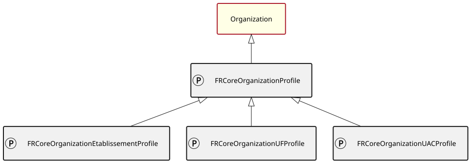
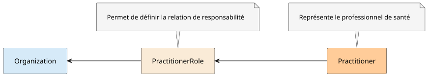

Links: Table of Contents | QA Report | Issue Liens: Table des matières | QA | Historique des versions | Issue
https://hl7.fr/ig/fhir/core/CodeSystem/fr-core-cs-champ-activite
https://hl7.fr/ig/fhir/core/CodeSystem/fr-core-cs-discipline-equipement
https://hl7.fr/ig/fhir/core/CodeSystem/fr-core-cs-uf-indicateur
https://hl7.fr/ig/fhir/core/CodeSystem/fr-core-cs-v2-0203
https://hl7.fr/ig/fhir/core/CodeSystem/fr-core-cs-v2-3307
https://mos.esante.gouv.fr/NOS/TRE_R66-CategorieEtablissement/FHIR/TRE-R66-CategorieEtablissement
This fragment is not visible to the reader
Certaines ressources sémantiques de ce guide sont protégées par des droits de propriété intellectuelle couverte par les déclarations ci-dessous. L’utilisation de ces ressources est soumise à l’acceptation et au respect des conditions précisées dans la licence d’utilisation de chacune d’entre elle.
| Type | Reference | Content |
|---|---|---|
| web | interopsante.org |
|
| web | interop.esante.gouv.fr | Catalogue des guides ANS |
| web | www.interopsante.org | Site Interop'Santé |
| web | interopsante.org |
IG © 2023+ Interop'Santé
. Package hl7.fhir.fr.core#2.1.0 based on FHIR 4.0.1
. Generated 2025-11-02
Links: Table of Contents | QA Report | Issue Liens: Table des matières | QA | Historique des versions | Issue |
| web | github.com | Links: Table of Contents | QA Report | Issue Liens: Table des matières | QA | Historique des versions | Issue |
| web | hl7.fr | En 2024, l’ensemble des ressources de conformité a été mis au sein de ce guide d’implémentation pour simplifier leur usage et leur accès, rendant les anciens profils simplifier obsolètes (Participants : Marie Brulliard, Sylvain Demey, Isabelle Gibaud, Yohann Poiron et Nicolas Riss). |
| web | groups.google.com | La qualité de ce guide d’implémentation s’améliore continuellement grâce aux précieuses contributions de la communauté. Pour rejoindre cette communauté, il suffit de rejoindre le Google Group FHIR France ou bien le slack FHIR France , et d’adhérer à InteropSanté . |
| web | join.slack.com | La qualité de ce guide d’implémentation s’améliore continuellement grâce aux précieuses contributions de la communauté. Pour rejoindre cette communauté, il suffit de rejoindre le Google Group FHIR France ou bien le slack FHIR France , et d’adhérer à InteropSanté . |
| web | www.interopsante.org | La qualité de ce guide d’implémentation s’améliore continuellement grâce aux précieuses contributions de la communauté. Pour rejoindre cette communauté, il suffit de rejoindre le Google Group FHIR France ou bien le slack FHIR France , et d’adhérer à InteropSanté . |
| web | www.interopsante.org | Participer aux groupes de travail d’InteropSanté |
| web | github.com | Déclarer des erreurs ou des suggestions d’amélioration via des GitHub issues |
| web | github.com | Proposer directement des changements via une Pull Request |
| web | github.com | Pour cela, il suffit de télécharger le package.tgz et l’importer dans un serveur, par exemple sur hapi en suivant ce script python open source. |
| web | participez.esante.gouv.fr | La stratégie sur le choix des versions FHIR a été définie au sein d’un groupe de travail organisé entre Interop’Santé et l’ANS en 2023/2024, validée via une concertation de l’ANS. |
| web | www.atih.sante.fr | 🌐 Guides PMSI MCO par année |
| web | sante.gouv.fr | 🌐 Guide méthodologique de comptabilité analytique |
| web | sante.gouv.fr | 🌐 INSTRUCTION N° DGOS/FIP1/2024/47 du 23 avril 2024 (page 49) |
| web | sante.gouv.fr | 🌐 Plaquette HPST 🌐 La loi HPST à l’hôpital - Les clés pour comprendre |
| web | sante.gouv.fr | 🌐 Plaquette HPST 🌐 La loi HPST à l’hôpital - Les clés pour comprendre |
| web | sante.gouv.fr | 🌐 GHT Mode d’emploi - vade-mecum |
| web | www.sae-diffusion.sante.gouv.fr | La DREES fournit les nomenclatures permettant de faire la Statistique annuelle des établissements de santé (S.A.E). |
| web | www.sae.drees-faq.sante.gouv.fr | Les nomenclatures utilisées pour ce recueil sont définies dans le document Nomenclatures de la SAE . Ce document est actualisé chaque année. |
| web | drees.solidarites-sante.gouv.fr | Etablissements de santé 🌐 Les établissements de santé : cadre juridique et institutionnel |
| web | esante.gouv.fr | 🌐 Formation FINESS - Généralités |
| web | entreprendre.service-public.fr | 🌐 Siren, Siret : de quoi s’git-il ? |
liens_entite.svg 
|
|
profiles_uml.svg  |
|
relations_personnes.svg  |
tree-filter.png 
|